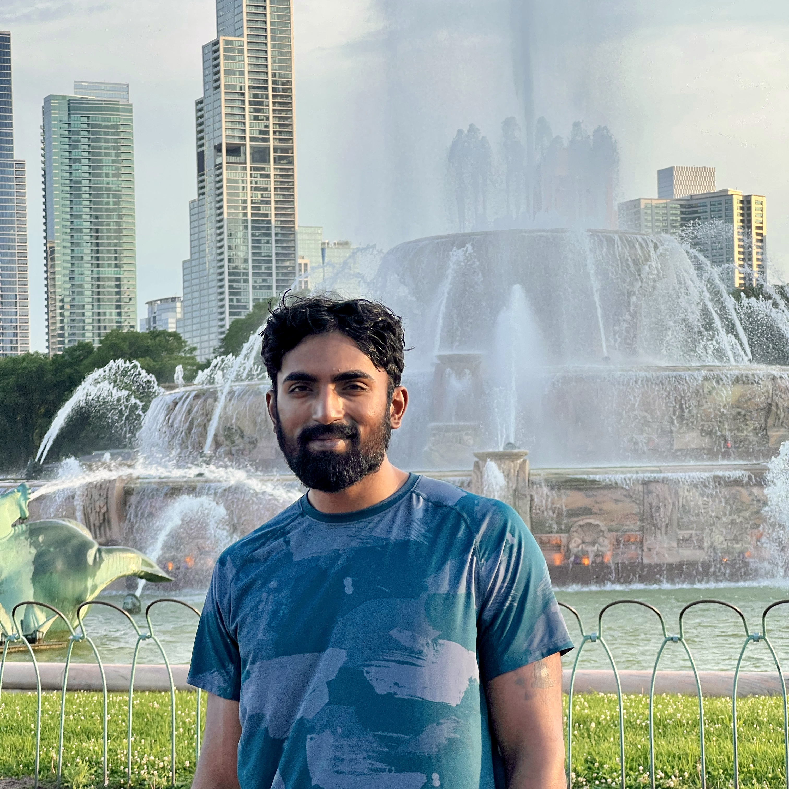

Sai Kiran Boppa

Summary
-
Around 3+ years of experience working in Data engineering and Software development.
-
Good programming skills at higher level of abstraction using Python.
-
Proficient in designing, implementing, and maintaining complex SQL queries, stored procedures, and functions to extract, transform, and load (ETL) data.
Education
- MS in Data Science University at Buffalo Buffalo, NY
Work experience
-
Data Engineer, Egen Solutions Inc
-
Worked on creating and maintaining robust ETL pipelines for structured, semi-structured and unstructured healthcare data.
-
Used Airflow as the workflow orchestration tool for running pipelines with containerized tasks on cloud.
-
Extensively used SQL for creating complex queries to fetch data from different data warehouses like RedShift and BigQuery.
Skills
- Python
- SQL
- Docker
- Kubernetes
- Git
- Airflow
- Terraform
Contact
Hobbies